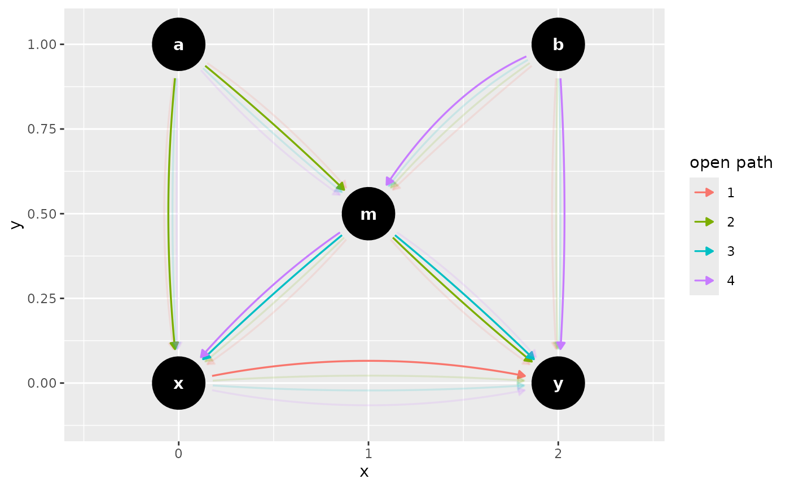

dag_paths finds open paths between a given exposure and outcome.
ggdag_paths and ggdag_paths_fan plot all open paths. See
dagitty::paths() for details.
Usage
dag_paths(
.dag,
from = NULL,
to = NULL,
adjust_for = NULL,
limit = 100,
directed = FALSE,
paths_only = FALSE,
...
)
ggdag_paths(
.tdy_dag,
from = NULL,
to = NULL,
adjust_for = NULL,
limit = 100,
directed = FALSE,
shadow = FALSE,
...,
node_size = 16,
text_size = 3.88,
label_size = text_size,
text_col = "white",
label_col = text_col,
node = TRUE,
stylized = FALSE,
text = TRUE,
use_labels = NULL
)
ggdag_paths_fan(
.tdy_dag,
from = NULL,
to = NULL,
adjust_for = NULL,
limit = 100,
directed = FALSE,
...,
shadow = FALSE,
spread = 0.7,
node_size = 16,
text_size = 3.88,
label_size = text_size,
text_col = "white",
label_col = text_col,
node = TRUE,
stylized = FALSE,
text = TRUE,
use_labels = NULL
)Arguments
- .dag, .tdy_dag
input graph, an object of class
tidy_dagittyordagitty- from
character vector of length 1, name of exposure variable. Default is
NULL, in which case it will check the input DAG for exposure.- to
character vector of length 1, name of exposure variable. Default is
NULL, in which case it will check the input DAG for exposure.- adjust_for
character vector, a set of variables to control for. Default is
NULL.- limit
maximum amount of paths to show. In general, the number of paths grows exponentially with the number of variables in the graph, such that path inspection is not useful except for the most simple models.
- directed
logical. Should only directed paths be shown?
- paths_only
logical. Should only open paths be returned? Default is
FALSE, which includes every variable and edge in the DAG regardless if they are part of the path.- ...
additional arguments passed to
tidy_dagitty()- shadow
logical. Show edges which are not on an open path? Ignored if
paths_onlyisTRUE.- node_size
size of DAG node
- text_size
size of DAG text
- label_size
size of label text
- text_col
color of DAG text
- label_col
label color
- node
logical. Should nodes be included in the DAG?
- stylized
logical. Should DAG nodes be stylized? If so, use
geom_dag_nodesand if not usegeom_dag_point- text
logical. Should text be included in the DAG?
- use_labels
a string. Variable to use for
geom_dag_label_repel(). Default isNULL.- spread
the width of the fan spread
Examples
confounder_triangle(x_y_associated = TRUE) %>%
dag_paths(from = "x", to = "y")
#> # A DAG with 3 nodes and 6 edges
#> #
#> # Exposure: x
#> # Outcome: y
#> #
#> # A tibble: 9 × 10
#> set name x y direction to xend yend circular path
#> <chr> <chr> <int> <int> <fct> <chr> <int> <int> <lgl> <chr>
#> 1 1 x 0 0 -> y 2 0 FALSE open path
#> 2 1 y 2 0 NA NA NA NA FALSE open path
#> 3 1 z 1 1 -> x 0 0 FALSE NA
#> 4 1 z 1 1 -> y 2 0 FALSE NA
#> 5 2 x 0 0 -> y 2 0 FALSE NA
#> 6 2 y 2 0 NA NA NA NA FALSE open path
#> 7 2 z 1 1 -> x 0 0 FALSE open path
#> 8 2 z 1 1 -> y 2 0 FALSE open path
#> 9 2 x 0 0 NA NA 2 0 FALSE open path
confounder_triangle(x_y_associated = TRUE) %>%
ggdag_paths(from = "x", to = "y")
butterfly_bias(x_y_associated = TRUE) %>%
ggdag_paths_fan(shadow = TRUE)
